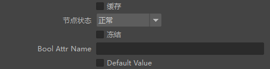
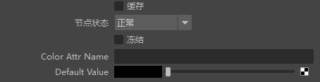
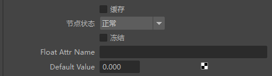
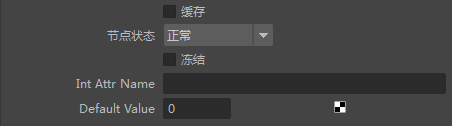
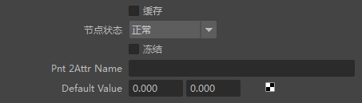
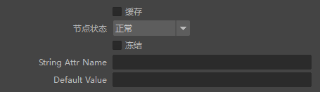
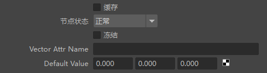

| 延伸阅读 |
|---|
| 有关完整的着色器文档，请参见《Arnold 用户手册》中的着色。 |
您可以向 Maya 中的形状节点添加属性，而 MtoA 可以将这些附加属性导出为 Arnold 形状节点中的用户数据。如果场景已转换为 Arnold，则不会自动导出属性。这些属性必须先作为 Maya“属性”添加到几何体，并显示在几何体的“附加属性”(Extra Attributes)中。导出时，MtoA 会将其转换为 Arnold 几何体上的用户属性。例如，如果以 user_data_rgb 指定一个属性，但传递的输入实际上是一个整数，它仍可以正常工作，只是将整数转化为浮点，并将它传递给每个 R、G 和 B 值。
还可以从体积形状读取用户数据字段，从而允许体积球面点云的每粒子用户数据之类的内容影响体积着色的结果。
以下示例显示了如何使用“用户数据”节点：

...
...

在曲面上的当前着色点处从形状用户数据读取 RGB 颜色。
具有指定名称的用户数据不可用时使用的输出值。

在曲面上的当前着色点处从形状用户数据读取浮点值。
具有指定名称的用户数据不可用时使用的输出值。

在曲面上的当前着色点处从形状用户数据读取整数值。
具有指定名称的用户数据不可用时使用的输出值。

...
...

从形状用户数据中读取字符串。
具有指定名称的用户数据不可用时使用的输出值。

...